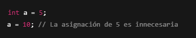
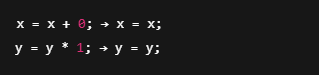
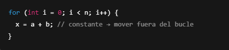
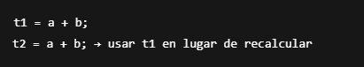
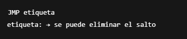
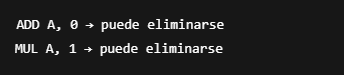

3.1 Tipos de optimización.
La optimización del código es una fase del compilador que mejora el rendimiento del programa generado, sin cambiar
su comportamiento. Existen diversas formas de clasificación según el momento en que se aplica o el tipo de mejora
que realiza.
3.1.1 Optimización Local
- Se realiza dentro de un solo bloque básico.
- Un bloque básico es una secuencia de instrucciones sin saltos (excepto al final).
- Es la forma más simple y rápida de optimización.
Ejemplo

Eliminación de código muerto

Simplificación algebraica
3.1.2 Optimización en Ciclos
- Se enfoca en mejorar el rendimiento de los bucles, ya que son zonas de alta repetición.
- Una optimización eficaz en bucles puede reducir significativamente el tiempo de ejecución.
Técnicas comunes:
- Code motion: Mover cálculos fuera del bucle si no cambian dentro.

- Eliminación de fuerza bruta: Reemplazar multiplicaciones por sumas o desplazamientos.
- Desenrollado de bucles (loop unrolling): Duplicar instrucciones para reducir iteraciones.
Constantes:
3.1.3 Optimización Global
- Abarca múltiples bloques básicos considerando el flujo de control completo del programa.
- Es más compleja, pero permite mejoras profundas.
- Propagación de copias: Reemplazar variables intermedias por su valor original.
- Eliminación de subexpresiones comunes:

- Renombramiento de variables para evitar conflictos y mejorar el uso de registros.
3.1.4 Optimización de Mirilla (Peephole Optimization)
- Es una técnica que analiza una ventana pequeña de instrucciones contiguas (una “mirilla”).
- Busca patrones ineficientes o redundantes y los reemplaza por versiones más eficientes.
Ejemplos
- Instrucciones redundantes consecutivas:
- Instrucción de salto innecesaria:

- Simplificación de secuencias:

← Volver al índice